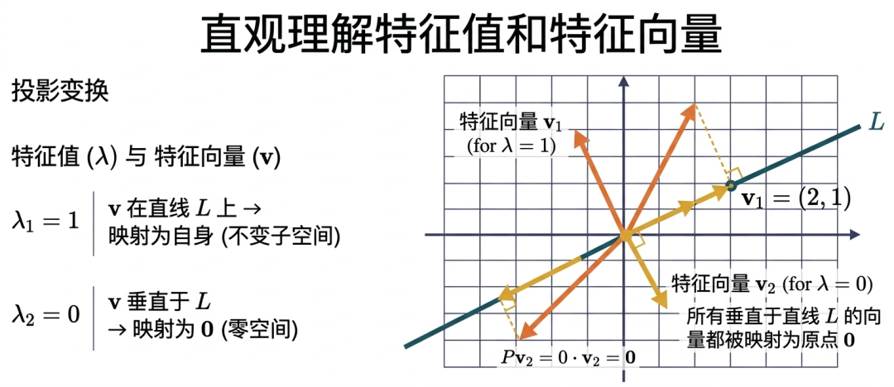
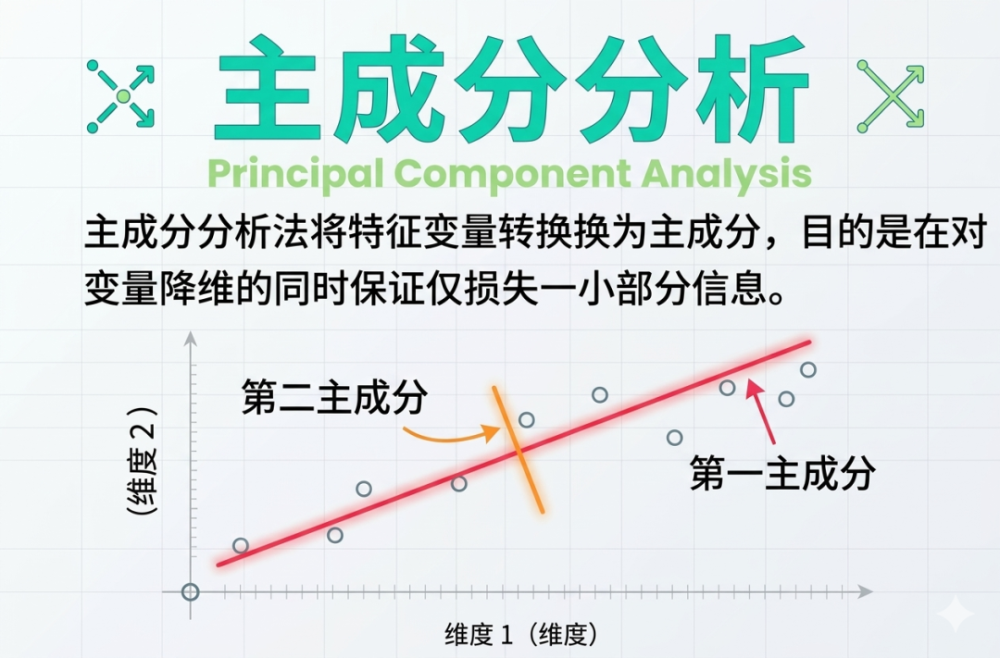
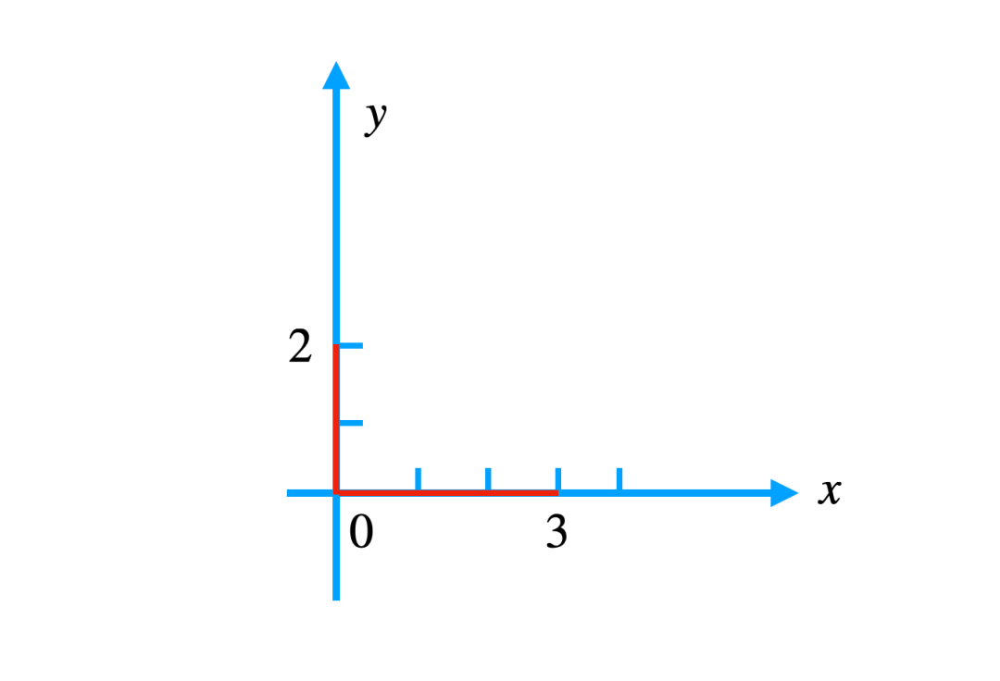
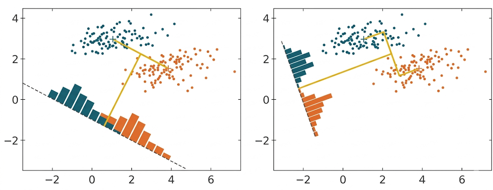

机器人必须服从人给予它的命令，当该命令与第一定律冲突时例外——阿西莫夫
正如我们在第3讲时所说，深度学习的高效之处就在于其不需要对数据做大量预处理，但作为一名算法工程师，我们仍然需要了解一些最基本的数据预处理方法，因为机器学习时代的大量效果提升，往往都离不开特征工程。
比如我们接触到的归一化，预处理工作在机器学习中称之为“特征工程”，可以说，没有特征工程的发展，就没有传统机器学习的蓬勃发展，今天我们重点来讲其中一种非常重要的数据处理思想：降维。
所谓降维，并不是简单地把原始特征“删掉几个”，更常见的做法是：把多个原始特征重新组合成更少的新特征，在尽量保留原始信息的前提下，降低数据的复杂度。
对数据做降维，通常是因为一个数据集的特征太多，里面可能存在噪声、冗余信息，或者某些特征之间本来就高度相关。这时如果仍然把所有特征一股脑送进模型，不仅会增加计算负担，还可能让模型更难抓住真正重要的信息。
其中，主成分分析（PCA，Principal Component Analysis）就是一种非常经典、非常常用的降维方法。
PCA全称为Principal Components Analysis，即主成分分析技术，这是一种广泛使用的数据降维方法，它的核心思想不是“挑出最重要的两个原始特征”，而是“把原始特征重新组合成少数几个新的特征”。
这些新的特征彼此之间尽量互不相关，同时又尽可能保留原始数据中的主要信息。这些新的特征，就叫作“主成分”。
我们以体育老师分析学生特长为例，假设体育老师想简化学生体能评估，从身高、体重、跳远、肺活量等10个指标中找出核心能力。
但指标太多时，老师很难一眼看出每个学生到底更偏向哪种体能优势。这时候，PCA 就可以帮老师把这 10 个原始指标，压缩成少数几个新的综合指标。比如，最后可能得到两个新的指标：
这样一来，老师就不用同时盯着 10 个指标看，而是只要看 2 个综合指标，就能快速判断学生的体能特点。
在进行 PCA 之前，通常要先做标准化处理。因为不同特征的单位和量纲可能完全不同：身高的单位是厘米、肺活量的单位是毫升或升、50米跑的单位是秒、握力的单位是公斤。
如果不先处理，数值尺度大的特征，往往会在计算中“声音更大”，从而不公平地影响最后的结果。
因此，我们通常会把每个指标都转换成“标准分”，也就是z-score：
比如，小明的身高是 180cm，而班级平均身高是 170cm，标准差是 5cm，那么标准化后的得分就是：
$$ \underbrace{z}_{\text{标准分数}} = \frac{\underbrace{180 - 170}_{\text{原始值与均值之差}}}{\underbrace{5}_{\text{标准差}}} = 2 $$这表示小明的身高比平均值高了 2 个标准差。标准化之后，不同指标就站在了同一起跑线上。以下是我们模拟的标准化后的 z-score 数据集：
| 学生编号 | 身高 | 体重 | 肺活量 | 50米跑 | 立定跳远 | 坐位体前屈 | 引体向上 | 1000米跑 | 握力 | 纵跳 |
|---|---|---|---|---|---|---|---|---|---|---|
| S1 | -0.62 | -0.55 | -0.48 | 0.91 | -0.51 | -0.36 | 0.72 | 0.88 | -0.43 | -0.50 |
| S2 | 0.15 | 0.21 | 0.08 | 0.22 | 0.19 | 0.31 | 0.41 | 0.26 | 0.12 | 0.24 |
| S3 | 1.02 | 1.10 | 0.96 | -0.63 | 1.05 | 0.82 | -0.18 | -0.44 | 0.98 | 1.01 |
| S4 | -1.18 | -1.05 | -1.11 | 1.12 | -1.09 | -0.82 | 1.21 | 1.16 | -1.04 | -1.02 |
| S5 | 0.88 | 0.84 | 1.02 | -0.82 | 0.93 | 0.65 | -0.42 | -0.53 | 0.79 | 0.90 |
| S6 | -0.05 | 0.02 | -0.10 | 0.36 | 0.01 | 0.12 | 0.08 | 0.33 | 0.05 | 0.18 |
| S7 | 0.56 | 0.49 | 0.61 | -0.21 | 0.58 | 0.27 | -0.11 | -0.15 | 0.44 | 0.53 |
| S8 | 1.21 | 1.08 | 1.15 | -0.95 | 1.13 | 1.06 | -0.53 | -0.71 | 1.09 | 1.16 |
我们这里以两个指标为例，根据直觉，高个子的同学可能跳的远，同时跳远好的人可能跑50米也快，但具体身高、50米奔跑速度之间有多相关？
| 样本编号 | 身高（厘米） | 50米跑（秒） |
|---|---|---|
| 1 | 170 | 68 |
| 2 | 180 | 75 |
先提醒一句：上面这两个样本只是为了帮助大家建立“两个变量一起看”的直觉，它们本身并不足以严谨地支撑完整的 PCA 计算。真正做 PCA 时，样本量通常远比这大得多。
协方差就是用来衡量两个指标之间变化趋势的工具，计算公式如下：
$$ \text{协方差}(身高, 50米跑) = \frac{所有样本的(身高偏差 × 体重偏差)的总和 }{样本数量 - 1} $$也可以写作：
$$ \text{协方差}(身高, 50米跑) = \frac{1}{样本数量 - 1} \sum_{i=1}^{样本数量} \left(身高_i - 身高均值\right) \times \left(50米跑_i - 50米跑均值\right) $$注：样本偏差 = 样本原始值 - 样本平均值
其中： $(身高_i - 身高均值)$ 表示第 $i$ 个样本的身高偏差、$(50米跑_i - 50米跑均值)$ 表示第 $i$ 个样本的 50 米跑偏差
如果两个指标经常同向变化，协方差通常为正；如果一个变大时另一个往往变小，协方差通常为负。
比如如果一个同学跳远成绩好，同时 50 米跑成绩也好，这两个指标可能呈现某种联动关系；如果一个指标变大时另一个反而变差，那么它们可能是负协方差
当我们把所有特征两两之间的协方差都算出来，就可以得到一个协方差矩阵。为了便于理解，这里先看一个示意性的 2×2 协方差矩阵：
$$ \Sigma = \begin{pmatrix} \text{Var}(X) & \text{Cov}(X, Y) \\ \text{Cov}(Y, X) & \text{Var}(Y) \end{pmatrix} $$如果觉得上面的公式太复杂，可以看这个例子，设身高为变量 $X$，50米跑为变量 $Y$，则协方差矩阵可写为：
$$ \text{协方差矩阵} = \begin{pmatrix} \text{方差}(身高) & \text{协方差}(身高, 50米跑) \\ \text{协方差}(50米跑, 身高) & \text{方差}(50米跑) \end{pmatrix} $$代入上面2×2的数据集，身高和50米跑的协方差矩阵为：
| 指标 | 身高 | 50米跑 |
|---|---|---|
| 身高 | 50 | 35 |
| 50米跑 | 35 | 50 |
对角线是每个指标的自身方差（横着和竖着一起看，观察第2行第2列），你可以理解为该指标的“波动程度”，非对角线是指标间的“连动关系”，比如50米跑和身高的协方差为35，表示正相关。协方差越大，意味着相关性越强。
即：对角线上的 50 和 50，表示各自的方差，也就是这个特征本身的“波动程度”；非对角线上的 35 和 35，表示两个特征之间存在正向联动关系；
PCA 之所以从协方差矩阵出发，就是因为它想找出：哪些特征在重复描述同一类信息，哪些方向真正包含了最多的数据差异。
有了协方差矩阵，我们还需要将这个矩阵进行分解，对于矩阵的运算，大可不必觉得陌生，我们在《第5讲：机器学习的核心思想：万物皆可向量》有过详细论述。
这里简单回顾一下，矩阵就是一个由各种标量或变量构成的表格，它和 Excel 表格并没有什么本质上的区别。
只不过数学上定义了一些矩阵间的运算，矩阵运算的法则和实际内部的值并没有什么关系，只不过定义了在运算时哪些位置需要进行哪些操作。
因为矩阵相当于定义了一系列运算法则的表格，那么其实它就相当于一个变换，这个变换可以看作是一个物理运动，可以由特征向量（方向）和特征值（速度）完全描述出来。

特征向量代表了需要变换的方向，而特征值代表了变换的倍数，你可以理解为将一张图片向着某个方向进行拉伸，而拉伸的方向由特征向量决定，拉伸的程度由特征值决定。
我们说过PCA的主要目标将多个特征通过数学变换成少数互不相关的主要特征，一般我们会将多数特征合并或者变换为两个主要的新特征，这两个新特征我们称之为主成分一和主成分二，这也是主成分分析得名的由来。
因此在在借助协方差矩阵求解上述问题的时候，我们可以将目标转换为：通过对协方差矩阵进行分解和变换，使得除了方差不为0且最大，其他值都为0的时候（回看一下示意性案例，身高和50米跑的协方差矩阵图），代表各特征之间毫不相干，不存在任何联动关系，就找到了两个主要的成分。
如果从二维直角坐标系来看，可以理解为先把数据中心移到原点附近，再旋转坐标轴，让新的横轴沿着数据方差最大的方向展开，使得主成分一（方差最大）和主成分二（方差次大）组成了新的正交轴。
注：从相似性计算的角度，正交意味着夹角为90度，相似度为0

当主成分一和主成分二各自独立的时候，意味着除了协方差矩阵中的方差不为0，其他数值都为0，这个时候协方差矩阵变为对角矩阵，对角矩阵具备可分解性，也就是完成了特征值的分解。
什么是对角矩阵：矩阵中的对角线的值不为0，其他值全都为0，称之为对角矩阵。
为什么对角矩阵具备可分解性，我们可以用下面最简单的示例讲清楚，由于此时协方差矩阵是对角矩阵，我们找个最简单直观的矩阵来阐述，下面是一个 2×2 的对角矩阵：
$$ D = \begin{bmatrix} 3 & 0 \\ 0 & 2 \end{bmatrix} $$对角线元素，3和2是特征值，表示沿坐标轴的缩放比例。对应的，这个矩阵的二维直角坐标系为下图：

落在x轴的点为3，y轴的点为2，此时特征向量的方向就是x轴和y轴的方向，特征值就是3和2，这个协方差矩阵就完成了特征值和特征向量的分解。
以上是具有两个特征维度的协方差矩阵进行特征值分解，推广到10 个特征维度的协方差矩阵，同样也是可以进行分解，将分解会得到 10个特征向量和特征值。
协方差矩阵经过特征分解后得到的对角矩阵，其对角线上的元素就是特征值。特征值的大小直接反映了对应主成分所携带的原始数据信息量（方差）的多少。
特征值代表每个“核心能力”的重要性。特征值越大，说明这个能力解释的数据差异越多。
而特征向量表示每个“核心能力”由哪些原始指标组成，权重越高代表该指标对核心能力的贡献越大。
我们先来分析特征值，特征向量在下个步骤中专门讲解。假设我们通过上一步的特征值分解技术，得到一个10×10的协方差对角矩阵：
$$ \Lambda = \begin{bmatrix} 0.55 & 0 & 0 & 0 & 0 & 0 & 0 & 0 & 0 & 0 \\ 0 & 0.35 & 0 & 0 & 0 & 0 & 0 & 0 & 0 & 0 \\ 0 & 0 & 0.08 & 0 & 0 & 0 & 0 & 0 & 0 & 0 \\ 0 & 0 & 0 & 0.06 & 0 & 0 & 0 & 0 & 0 & 0 \\ 0 & 0 & 0 & 0 & 0.05 & 0 & 0 & 0 & 0 & 0 \\ 0 & 0 & 0 & 0 & 0 & 0.04 & 0 & 0 & 0 & 0 \\ 0 & 0 & 0 & 0 & 0 & 0 & 0.03 & 0 & 0 & 0 \\ 0 & 0 & 0 & 0 & 0 & 0 & 0 & 0.02 & 0 & 0 \\ 0 & 0 & 0 & 0 & 0 & 0 & 0 & 0 & 0.01 & 0 \\ 0 & 0 & 0 & 0 & 0 & 0 & 0 & 0 & 0 & 0.005 \\ \end{bmatrix} $$我们直接能够看到前两个特征值 $\lambda_1$ = 0.55 和 $\lambda_2$ = 0.35 远大于其他特征值，表明前两个主成分包含了数据中的主要信息。
然后我们再通过计算方差的占比来实际统计前两个方差的主成分贡献率，其中总方差 = 所有特征值之和 = 0.55+0.35+0.08+0.06+0.05+0.04+0.03+0.02+0.01+0.005=1.195
前两个主成分的方差贡献率 = (0.55 + 0.35) / 1.195 $\approx 0.753$（即75.3%），说明原来 10 个特征里的大部分信息，已经被前两个主成分保留下来了。
在很多实际任务里，如果前几个主成分已经保留了大部分方差信息，我们就可以考虑只保留它们。至于保留 70%、80%、90% 还是更高，并没有绝对统一的标准，通常要结合业务需求和实验结果来决定。
通过计算每个特征值，或者说方差的贡献率，我们保留了最主要的两个成分，但是这两个成分是新的指标，代表了什么含义呢？我们通过特征向量的分析可以得到答案。
每个特征值都对应一个特征向量。特征向量的每个元素说明了每个原始指标对该主成分的贡献程度和方向。
假如这里我们一共有10个体能指标，因此特征向量里面也有10个元素，例如：［0.55, 0.35, 0.08, 0.06+0.05, 0.04, 0.03, 0.02, 0.01, 0.005］，对应位置的体能指标为：［身高,体重,肺活量,50米跑,立定跳远,坐位体前屈,引体向上,1000米跑,握力,纵跳］，每个元素的数值大小和正负都代表了对应原始体能指标对于该主成分的贡献程度和相关性。
特征向量中每个元素的绝对值越大，代表该原始指标对构成这个主成分的贡献越大，越能代表该主成分的本质。
而每个元素的正负号表示原始指标与主成分之间的关系。正号表示正相关，即该指标值越大，在主成分上的得分越高；负号表示负相关。
假设我们通过以上的特征值分解技术，得到10×10的协方差对角矩阵的同时，对角线上的每个特征值对应的特征向量如下所示，为了便于说明，我们假设另一个班的数据如下：
| 特征值 (λ) | 主成分 | 身高 | 体重 | 肺活量 | 50米跑 | 立定跳远 | 坐位体前屈 | 引体向上 | 1000米跑 | 握力 | 纵跳 |
|---|---|---|---|---|---|---|---|---|---|---|---|
| 0.25 | PC1 | 0.35 | 0.33 | 0.32 | -0.31 | 0.34 | 0.29 | 0.28 | -0.27 | 0.33 | 0.32 |
| 0.15 | PC2 | 0.10 | 0.12 | 0.45 | -0.40 | 0.15 | 0.38 | 0.36 | -0.42 | 0.14 | 0.16 |
| 0.08 | PC3 | 0.20 | -0.25 | 0.10 | 0.15 | -0.20 | 0.10 | -0.10 | 0.12 | 0.22 | -0.18 |
| 0.06 | PC4 | -0.15 | 0.10 | 0.10 | 0.10 | 0.20 | -0.25 | 0.20 | 0.15 | -0.10 | 0.20 |
| 0.05 | PC5 | 0.10 | 0.10 | -0.20 | 0.20 | 0.10 | 0.10 | -0.15 | 0.10 | 0.10 | -0.10 |
| 0.04 | PC6 | -0.10 | 0.15 | 0.10 | 0.10 | -0.10 | 0.15 | -0.10 | 0.10 | -0.15 | 0.10 |
| 0.03 | PC7 | 0.10 | -0.10 | 0.10 | -0.10 | 0.10 | -0.10 | 0.10 | -0.10 | 0.10 | -0.10 |
| 0.02 | PC8 | -0.10 | 0.10 | -0.10 | 0.10 | -0.10 | 0.10 | -0.10 | 0.10 | -0.10 | 0.10 |
| 0.01 | PC9 | 0.10 | 0.10 | 0.10 | 0.10 | 0.10 | 0.10 | 0.10 | 0.10 | 0.10 | 0.10 |
| 0.005 | PC10 | -0.10 | -0.10 | -0.10 | -0.10 | -0.10 | -0.10 | -0.10 | -0.10 | -0.10 | -0.10 |
我们主要关心前两个主成分的特征向量，然后我们分别来分析下两个主成分中每个指标对于该成分的贡献。
第一主成分 (PC1) 的解释：
首先分析第一主成分，其中有正向贡献的指标为：立定跳远 (0.34)、身高 (0.35)、体重 (0.33)、握力 (0.33)、纵跳 (0.32)；
仔细分析，其中力量（握力）、速度（50米跑）和弹跳（立定跳远、纵跳）贡献占比较高，而这些都是在短时间内输出最大功率的能力指标。
这样我们可以将这些指标统一解释为爆发力的体现，也就是说PC1这个主成分代表的是爆发力。
第二主成分 (PC2) 的解释：
其次是第二主成分，其中有正向贡献的指标为：肺活量 (0.45)、坐位体前屈 (0.38)、引体向上 (0.36)，负向贡献的指标为：1000米跑(-0.42)。
肺活量是心肺功能的直接体现，引体向上需要肌肉重复做功的能力，柔韧性（坐位体前屈）和持久奔跑能力（1000米跑）也与持续运动能力有关。
这样我们可以将这些指标统一解释为耐力的体现，也就是说PC2这个主成分代表的是耐力。
这样我们通过特征向量的分析，就完成了对两个主成分，即两个新体能指标的解释。
有了各项原始指标对于新指标爆发力和耐力的贡献度，我们就可以将每个学生的原始数据，按主成分的权重公式计算得分，比如S1号学生，其他学生以此类推：
（1）爆发力得分 = 跳远×0.4 + 50米跑×(-0.3) + 肺活量×0.1 + …
（2）耐力得分 = 肺活量×0.6 + 1000米跑×(-0.5) + …
光是计算每个学生的爆发力和耐力得分还不够直观，可以将画一个二维坐标系（爆发力, 耐力），老师一眼就能看出谁适合短跑（爆发力高）、谁适合长跑（耐力高）。
耐力 (Y轴)
↑
5 │ ● C（全能型）
│
4 │ ● B（耐力型）
│
3 │ ● D（均衡型）
│
2 │
│
1 │ ● A（爆发型）
│
0 └──────────────→ 爆发力 (X轴)
0 1 2 3 4 5这就是 PCA 最直观的价值：把原本高维、难以观察的数据，压缩成少数几个容易理解、容易可视化的新特征，但是我们并没有讲解主成分分析的核心技术点：协方差矩阵是如何分解为对角矩阵的？
回顾一下，协方差矩阵分解的核心目标是通过数学方法找到数据分布的主方向，让新坐标系的横轴方向能最大程度保留数据的差异性，即方差最大，而纵轴方向则与横轴正交且保留次大的差异性。
先来理解为什么要“方差最大”？方差越大，说明数据在这个方向上的分布越分散，包含的信息量越多。
PCA 的核心目标可以概括成一句话：找到一个方向，使得数据投影到这个方向后，尽可能分得更开。
比如体育老师要评估学生的“爆发力”，现有两个体能指标：
（1）跳远成绩（方差大）：有的学生跳5米，有的跳2米，差异明显。
（2）短跑成绩（方差小）：所有学生都在7-8秒之间，差异很小。
跳远成绩的方差更大，能更好地区分学生爆发力的差异。因此，跳远方向就是“方差最大”的主成分方向。所以，PCA 会优先寻找那种最能把学生差异拉开的方向。这个方向，就是第一主成分。
跳远成绩（方差大）
↑
| ●●●
| ●●●●●
|●●●●●●●
+————————→ 50米跑成绩（方差小且与跳远正相关）那为什么要正交（垂直），因为正交可以保证两个特征无任何相似度，也就是因为是“无相关性”？如果两个方向相关，不论是正相关或负相关，说明它们描述的是同一件事，存在信息冗余。
只要找到新坐标的横轴，我们自然可以保证纵轴和横轴正交，所以我们首要任务是保证找到这样的一根横轴：能最大程度保留数据的差异性，即方差最大。
想象这样一个生活场景，假设你要找一条直线，让散落在地上的珠子（数据点）投影到直线上后“最分散”（方差大）。如果允许你随意“拉伸”直线（比如把直线上的刻度放大10000倍），再分散的珠子投影后都会变得非常分散——这显然是“作弊”，因为你没改变直线的方向，只是改变了刻度。

约束 $w^T w$ = 1 就相当于“固定直线的刻度”（单位向量的模长固定 $|w|$ ），此时你只能通过调整直线的方向来让珠子投影更分散，最终找到的才是真正“让数据本身最分散”的方向（主成分），如果从数学上写，PCA 想最大化的目标可以写成：
$$ J(\mathbf{w}) = \mathbf{w}^T C \mathbf{w} $$注释版：
$$ J(\mathbf{w}) = \underbrace{\mathbf{w}^T}_{\text{投影方向转置}} \underbrace{C}_{\text{协方差矩阵}} \underbrace{\mathbf{w}}_{\text{投影方向量}} $$这里：
另外最大化目标的同时，还附带一个约束条件，投影方向必须为单位向量（即 $\|\mathbf{w}\|^2=1$），约束的目的是使得最大方差不会无限大。
于是，这就变成了一个“在带约束条件下求最大值”的问题。数学上通常会用拉格朗日乘数法来处理，拉格朗日乘数法的本质是将带约束的极值问题转化为无约束的极值问题：
$$ L(\mathbf{w}, \lambda) = \mathbf{w}^T C \mathbf{w} - \lambda (\|\mathbf{w}\|^2 - 1) $$注释版：
$$ \underbrace{L(\mathbf{w}, \lambda)}_{\text{拉格朗日函数}} = \underbrace{\mathbf{w}^T C \mathbf{w}}_{\text{原目标函数}} - \underbrace{\lambda}_{\text{拉格朗日乘子}} \left( \underbrace{\|\mathbf{w}\|^2}_{\text{权重向量的L2范数平方}} - \underbrace{1}_{\text{约束常数}} \right) $$接着对它求导，最后会得到一个非常关键的结果：
$$ C\mathbf{w} = \lambda \mathbf{w} $$这个式子是什么意思？它其实就在告诉我们：$\mathbf{w}$ 是协方差矩阵的特征向量, $\lambda$ 是对应的特征值,而前面我们已经说过：特征向量决定方向，特征值决定这个方向上保留了多少信息，所以最终结论就是：PCA 的第一主成分方向，就是协方差矩阵最大特征值所对应的特征向量。后面的第二、第三主成分，也都是按这个思路继续找出来的。
上面我们是从“协方差矩阵 + 特征值分解”的角度来讲 PCA 的。这样讲，概念上最直观，也最容易帮助初学者建立理解。
不过在实际计算中，PCA 往往也可以通过 SVD（奇异值分解）来实现，而且在数值计算上通常更稳定、也更常见。
所以，更准确地说：SVD 并不是和 PCA 完全对立的另一种降维方法，它很多时候恰恰是求解 PCA 的一种更常用方式。
下一篇，我们就来讲讲 SVD 奇异值分解，看看它为什么会成为实际工程里更常见的工具。
降维（Dimensionality Reduction）：指把原本维度很高的数据，压缩成更少的维度，同时尽量保留原始数据中的主要信息。降维可以减少噪声、降低计算量，也更方便可视化和分析。
主成分（Principal Component）：指 PCA 从原始特征中重新组合出来的新特征。主成分不是简单挑出来的原始列，而是多个原始特征加权组合后的结果。
协方差（Covariance）：用来描述两个变量是否倾向于一起变化。协方差为正，说明两个变量常常同向变化；协方差为负，说明一个变大时另一个往往变小。
协方差矩阵（Covariance Matrix）：把所有特征两两之间的协方差整理成一个矩阵。PCA 正是通过分析这个矩阵，来寻找数据中最重要的变化方向。
特征向量（Eigenvector）：可以理解为数据中某个重要变化方向。PCA 中的主成分方向，就是由特征向量给出的。
特征值（Eigenvalue）：表示某个特征向量方向上保留了多少信息。特征值越大，通常说明这个方向越重要。
方差贡献率（Explained Variance Ratio）：表示某个主成分解释了原始数据中多少比例的信息量。它常被用来决定“应该保留几个主成分”。